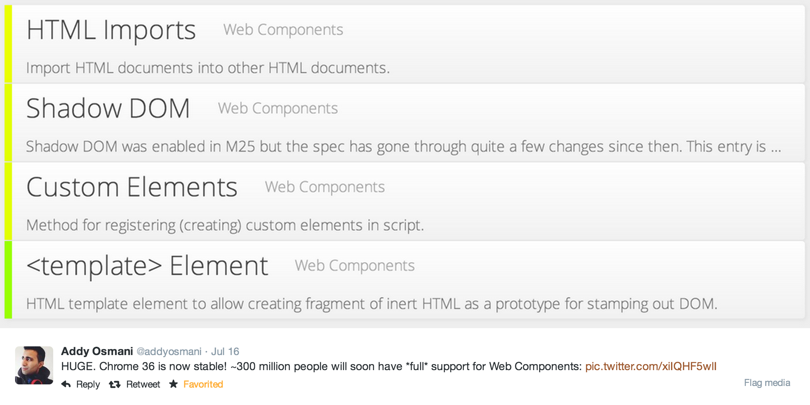
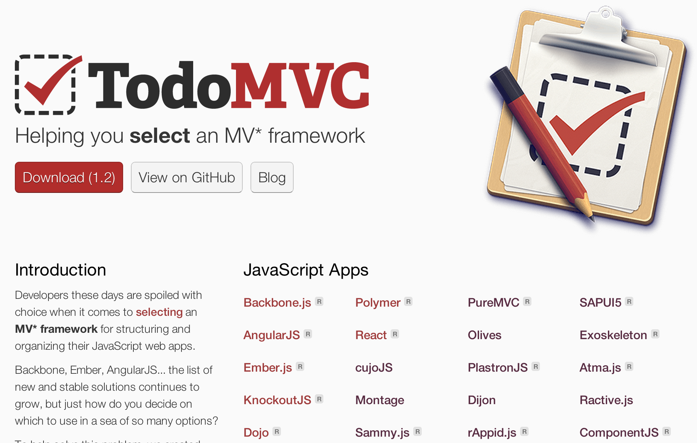
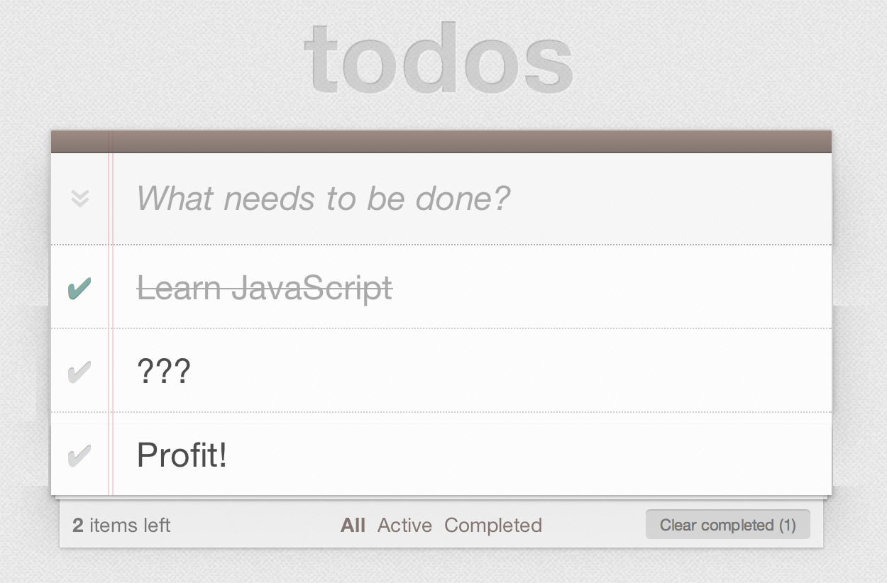
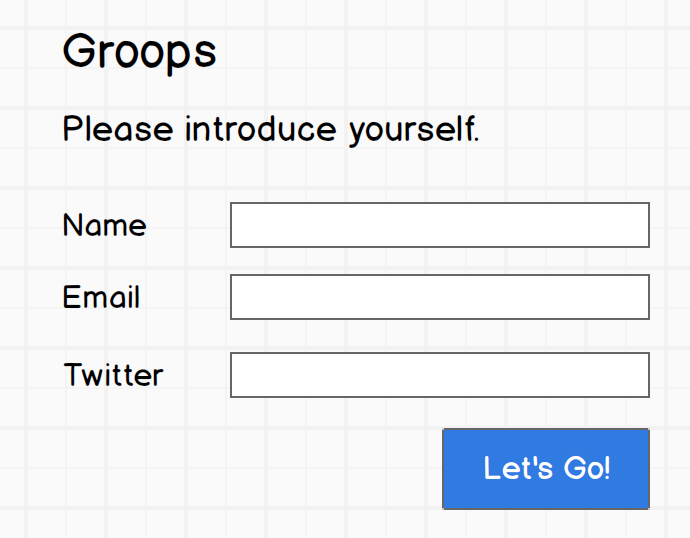
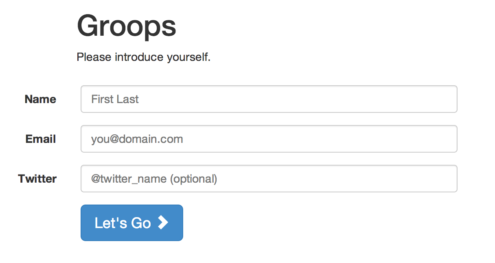
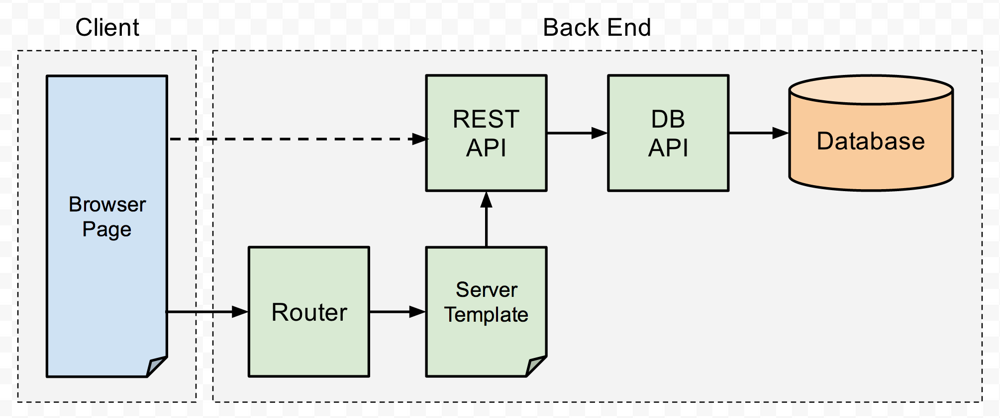

Bleeding Edge Web: July 2014
News from the Bleeding Edge
— Brian Moeskau (@bmoeskau)
Web App by Example: Node.js
— Brian Moeskau (@bmoeskau)
— Corey Butler (@goldglovecb)
News from the Bleeding Edge
Browser Pop Quiz
Last version check — December 2013 (7 months ago):
Browser Pop Quiz
As of July 2014:
Chrome Highlights
Version 32
- Disabled all but 6 Netscape Plugin API plugins by default
- Phasing out support completely

Chrome Highlights
Version 33
var msg = new SpeechSynthesisUtterance("Bleeding Edge Web Rules!");
window.speechSynthesis.speak(msg);
Chrome Highlights
Version 34
- Responsive image support:
<img src="low-res.jpg" srcset="high-res.jpg 2x, ultra-res.jpg 4x">
- Note: Will soon be superceded by <picture>
Chrome Highlights
Version 35
Chrome Highlights
Version 36
Chrome Highlights
As of Chrome 36:

Firefox Highlights
Version 27
- Reset CSS styles per element via 'all:unset'
- Support for ES6 generators

Firefox Highlights
Version 29
- Support for ES6 Promises
- Support for <input type="number"> and <input type="color">
Firefox Highlights
Version 30
[for (i of [ 1, 2, 3 ]) i*i ];
// [ 1, 4, 9 ]
var abc = [ "A", "B", "C" ];
[for (letters of abc) letters.toLowerCase()];
// [ "a", "b", "c" ]
Firefox 31
Released yesterday
Continued push toward ES6 API compatibility:
Safari Highlights
Basically not much changed. But...
Version 8.0 will be released with OSX 10.10 (Yosemite) "Fall 2014"
Consumer-focused, slow to adopt ES6 / W3C specs

Opera Highlights
Last one here, please turn out the lights

IE Highlights
Mostly minor fixes, security patches
Relased first "dev channel" version of IE on June 16th!

IE Highlights
So what's actually happening in dev channel?
- WebGL improvements (OK, actually useful)
- Gamepad API support (cool for gamers)
- WebDriver support (OS-level web page interaction scripting / testing)
- "F12" developer console improvements
What was all that about "ES6"?
ES6: What is it?
EcmaScript version 6 ("Harmony")
Language, syntax and core object improvements
Should eventually filter to all JS environments (may be a while...)
Polyfills available today for most useful parts
ES6 in a Nutshell
- Syntactical improvements (let, const, parameter defaults)
- "Class" syntax (class, extends, module)
- Language modernization ("fat arrow" =>, Promises, proxies, generators)
- Lots of new Object, Array, String, Regex and Math methods
ES6 Compatibility Today
So, if you're keeping score:
ES6: Why Should I Care?
- JavaScript is the runtime of the web
- ES6 is inevitable (at some point)
- Basic native syntax improvements (block scope, promises)
- Built in support for useful patterns (module, class)
- Already very useful today, in some environments (Node)
ES6: Why Should I Care?
Any application that can be written in JavaScript, will eventually be written in JavaScript.
Web App by Example: Node.js
The Problem
There's no easy way to compare full-stack web app architectures apples-to-apples.
On the client-side there's TodoMVC (http://todomvc.com/):

The Problem
TodoMVC is cool, and useful, but pretty simple (and client-only)

Goals
We wanted to see this concept expanded to include the server-side.
We also wanted to show common real architectural requirements:
- Dependency / package management
- Application structure (MVC, MVVM, etc.) on client and server
- Request routing
- REST API support
- Server UI templating (loosely coupled to API)
- Data model / ORM / persistence layer
- Validation
- Unit tests
Goals
Sample Application
- Full stack with interchangeable layers
- Small in scope, but not trivial
- Multiple related data models
- Defined specs, but general to any framework
- Interesting in the context of our meetup
Introducing Groops
On-demand virtual group Q&A
- Basic profile
- Ability to create and join rooms
- Simple group chat
Should work during this presentation, at least... :)
Design
Spec highlights
- UI use cases
- REST API
- Data "entities" (User, Room, Message)
Design
Register / Profile

Design
Register / Profile

Architecture
Pretty simple, relatable to any framework

Tools
Basics:
- Node.js
- npm (package management)
- Express (web / application server)
- Mongodb (Mongo DB client library)
- Bootstrap (UI styling)
Node modules:
- Express middleware (body-parser, express-session, etc.)
- request (http client library)
- socket.io (web sockets)
Getting Started
Express quick start (after installing Node and npm):
// Get express set up:
npm install express
npm install -g express-generator
// Generate an app skeleton
express myapp
// Install the app's dependencies:
cd myapp
npm install
// Run it!
npm start
Adding New Libraries
One of the really nice features of Node + npm:
// Install and save dependency info:
npm install socket.io --save
// Install and save as a dev-only dependency:
npm install mocha --save-dev
Server-side Templating
EJS
- Support built into Express
- Simple, familiar syntax
- Basic filter support
- Not super flexible
Other options to consider
- Jade (like HAML)
- Handlebars / Mustache
- Nunjucks
Server-side Templating
EJS Syntax Example
<table id="messages" class="table table-striped">
<tbody>
<% for (var i=0; i < messages.length; i++) { %>
<tr>
<td><%= messages[i].content %></td>
</tr>
<% } %>
</tbody>
</table>
Mongo DB
- Native JSON (actually BSON) fits really well with Node/JS
- Easy to get up and running
- No schemas / SQL (good and bad)
- Good hosted options (MongoLab, MongoHQ)
- Production deployment / scaling takes some thought
Deployment
Using Heroku for the demo
// Init Heroku for myapp
cd myapp
heroku login
heroku create
// Deploy it
git commit -m "Deploying to Heroku!"
git push heroku master
// Manage the app
heroku ps:scale web=3
heroku logs
heroku restart
Next Steps
Some things to consider for extending Groops to the next level.
(Translation: Stuff we ran out of time to include...)
- More robust data model: Mongoose perhaps
- Production-readiness: security, validation, logging, etc.
- Unit testing: Mocha, many others
- Code quality / process: Grunt/Gulp, jshint, CI
- Additional features: upvote messages, more group features
Next Steps
Our main goal is being able to compare Node/Express to other frameworks.
In the next week or so:
- Finalize the specs / docs
- Clean up the demo app code
- Implement some basic unit tests and API validation tests
If all goes well, we'll see a Django version next month!
Anyone interested in porting to Rails or anything else?
←
→
/
#